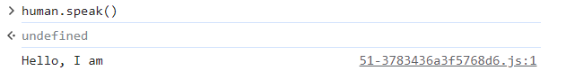
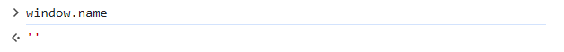

In this blog post I will be implementing the three most important interview questions that are generally asked in frontend interviews - How to implement Debounce, Curry and Throttle utility functions in Javascript Before you embark on these implementations, you need to be comfortable with the following features of Javascript -
this keywordapply, call and bind
What is Debounce? Debounce is a technique using which you can substitute
multiple functions calls with a single function call that happens after
a threshold wait time. Every subsequent call to the
function cancels the previous call and will execute the current call
only if the function gets called after a threshold
wait time.
Scheduling the function call to happen after a wait time
reminds one of setTimeout which calls the function after a
particular amount of minimum delay. You can also cancel the function
call using the clearTimeout function.
function debounce(func, wait=0) {
let timerID = null;
const debounceFunc = function(...args) {
// Clear the previous timer
clearTimeout(timerID);
// Create a new timer
timerID = setTimeout(function() {
func(...args);
timerID = null;
}, wait);
}
return debounceFunc;
}
Here, we have leveraged the concept of closures to
maintian access to the timerID inside the inner function
and setTimout. This way we can cancel the call to
func if it happens before the minimum
wait time.
Also notice, inside the setTimeout callback we are calling
func directly with its arguments. We are however
overlooking something here. We haven’t taken care of the context in
which we are calling the original function. Since debounced function are
supposed to behave the same way as the original function (execution
wise), we would want to bound
this to the context where it was invoked when calling
func(…args), but here this is bound to the
global context.
To further check if this is how things are, we can try calling the
debounced function over an Object to see if
this is bound to its context.
function sayHello() {
console.log(`Hello, I am ${this.name}`);
}
const human = {
name: "Divyanshu",
speak: debounce(sayHello) // By default wait=0
}
// What do you think the output here will be?
human.speak();

Output from the code above
See? func(…args) invocation is not bound to the
this value of the Object, instead here
this refers to the global context.

Actual value of this
It’s simple to do it: We simply store the calling context of the
debounced function in a context variable and pass it to
apply while calling it on func. This way we
successfully preserve the value of this when invoking
func
function debounce(func, wait=0) {
let timerID = null;
const debouncedFunc = function(...args) {
const context = this;
timerID = setTimeout(function() {
func.apply(this, args);
timerID = null;
}, wait);
}
return debounceFunc;
}
Alternatively, instead of storing the value of context in a
variable, you can use arrow function to define the
setTimout callback. The value of this inside a
arrow function is same as the context in which it has been created and
is not bound to the environment in which the function is called.
function debounce(func, wait=0) {
let timerID = null;
const debouncedFunc = function(...args) {
timerID = setTimeout(() => {
func.apply(this, args);
timerID = null;
}, wait);
}
return debounceFunc;
}
Note: However you need to be careful that
debouncedFunc cannot be defined as an arrow function
because in that case, this will be bound to the
global context as this value in arrow
functions is calculated at the time of creation and not during runtime
from their environment in which they are being invoked.
References: In case if you are a bit confused about the
role of this, check out this awesome
article.
Throttling is a technique using which you limit the invocation of a
particular function to once every n seconds where
n is the wait time. We will implement a function
throttle that takes in a function and wait time as
arguments and returns you a function that when executed can only be
executed after the minimum specified wait time.
The above discussion should give you a hint that the function returned by throttling can only exist in two states:
Note that we need to switch back to active mode after
the wait time. This should give you a hint that
setTimeout would be needed as switching back to
active state is time dependent. Also, since there are
only two states, we can use a boolean to model it.
Here’s how we will go about throttle's implementation:
throttle takes in two arguments,
func and wait. Where func is
the function to be throttled and wait is the minimum wait
time until the next invocation.
flag inside
throttle and set it to true. This keeps
track of the state of the function returned by it.
flag is
true.
true
func.falsetrue after wait time.
false, do nothing.Here’s the full implementation in code:
function throttle(func, wait) {
let flag = true;
return function(...args) {
if(flag) {
func.apply(this, args);
setTimeout(() => flag = true, wait);
flag = false;
}
}
}
Note that since throttled functions are used just like the original
function we should preserve the value of this when invoking the original callback functions. Therefore we cannot:
this value from its lexical scope.
func(...args) because it
will not forward the correct this context.
Currying is a technique of converting a function which takes multiple
arguments into a sequence of functions that each takes a single
argument. Here we will be implementing a function called
curry that creates a curried function for you. As an
example, this is how a normal function differs from a curried function:
const sum = function(a, b) {
return a+b;
}
sum(2, 3); // Gives you 5
const curriedSum = curry(sum);
curriedSum(2)(3); // Gives you 5
const alreadyAddedThree = sum(3);
alreadyAddedThree(2) // Gives you 5
To better understand the implementation of a curry function that takes a generic function with ‘n’ arguments let’s try implementing a curried function for a function with 3 arguments first:
const sumABC = function(a, b, c) {
return a + b + c;
}
// Curried function
const curriedSumABC = function(a) {
return function(b) {
return function(c) {
return a + b + c;
}
}
}
Here’s something you would notice from above - You keep returning a
function until you run out of arguments, after which you return the
calculated sum a + b + c. Also notice how we leverage
Closures to access variables from the lexical scope for
calculation inside the inner most function.
From the above discussion it is evident that we need to keep a record of
the number of arguments that have been accepted so far in the sequential
function calls. Moreover, the curry function needs to
return a function that accepts a single argument which when invoked
either computes the value of the callback or returns itself.
Here’s how we will go about its implementation:
args to keep track of all the arguments
that have been passed.
curried which accepts a single
argument arg, inside it:
arg passed to it is not
undefined
undefined push it to
args array
args array has the same length as the
arity of the callback function.
return
return itselfHere’s the full implementation in code:
function curry(func) {
const args = [];
return function curried(arg) {
if(arg !== undefined) args.push(arg);
if(args.length >= func.length) {
return func.apply(this, args);
}
return curried.bind(this);
};
}
Note the use of apply and bind functions
respectively to preserve the this context in which the
first call to the curried function was made. Again, we didn’t define the
inner function as an arrow function since arrow functions derive their
this context from their lexical scope at the time of
creation (which is global in this case) and not during
runtime from their environment.
There’s one huge mistake in this implementation though. Can you spot it?
You can only use the curried function once after which it becomes
useless. Why? The issue is with shared args array in the
lexical scope of the curry function. Once you've
curried the function and provided enough arguments to invoke the
original function (func), the args array
retains those arguments. This means that any subsequent calls to the
curried function will continue to use the same accumulated arguments,
making the curried function effectively unusable after the first
complete invocation.
In fact to fix this, we need to get rid of args variable
from the lexical scope of inner curried function
altogether. We make two changes respectively:
curried to take a spread of
arguments ...args, and
curried function is returned with its context bound to
the current this and the accumulated arguments.
function curry(func) {
return function curried(...args) {
if(args.length >= func.length) {
return func.apply(this, args);
}
return curried.bind(this, ...args);
};
}
So basically we fix this issue by not relying on a shared
args array in the outer scope. Instead, it accumulates
arguments using the rest parameter and binds them to the curried
function using bind, ensuring that each curried function
has its own set of arguments.